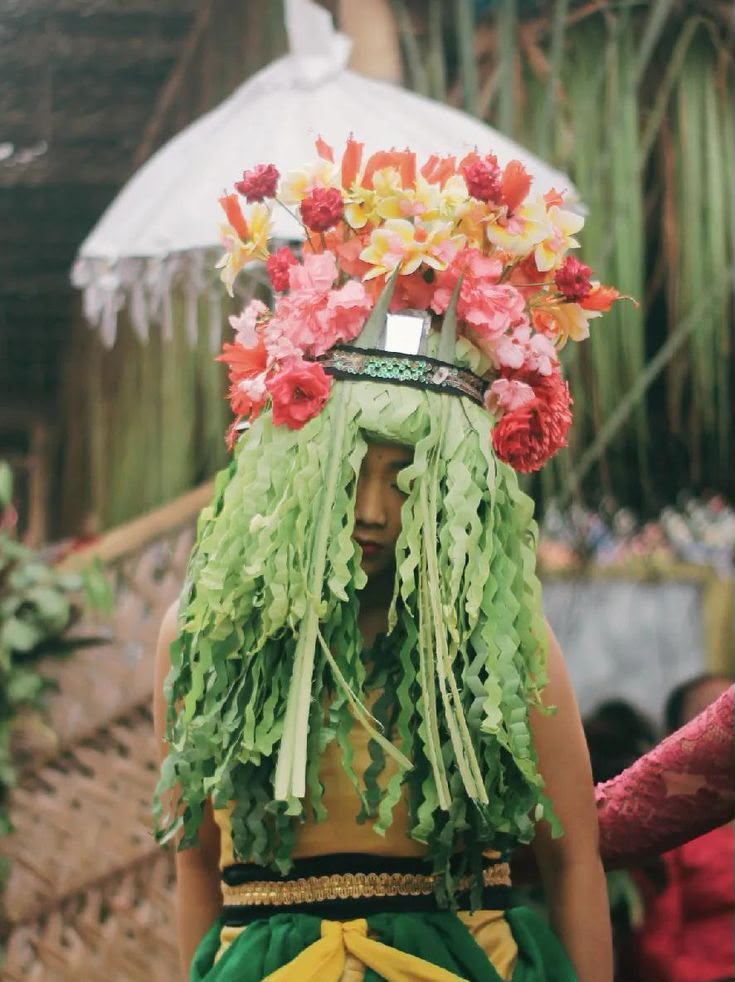
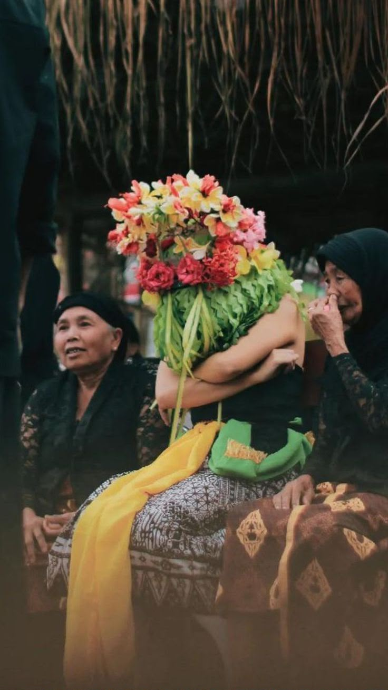
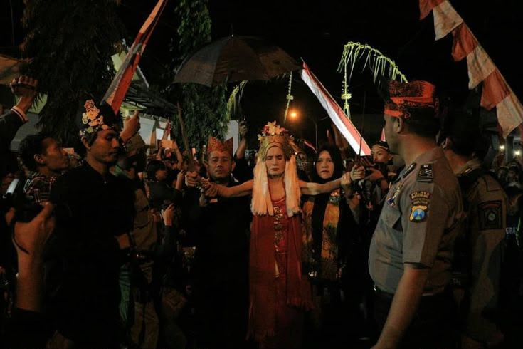

📜 Sejarah
Tradisi Seblang merupakan ritual adat masyarakat Suku Osing di Banyuwangi yang telah berlangsung secara turun-temurun selama ratusan tahun. Tradisi ini dipercaya sebagai warisan leluhur yang bertujuan untuk membersihkan desa dari berbagai marabahaya dan menjadi salah satu tradisi paling terkenal di Banyuwangi.
Seblang Olehsari
Seblang Olehsari merupakan ritual adat masyarakat Suku Osing di Desa Olehsari, Banyuwangi. Tradisi ini biasanya dilaksanakan setelah Hari Raya Idulfitri dan menjadi salah satu tradisi paling terkenal di Banyuwangi.
Seblang Bakungan
Seblang Bakungan merupakan tradisi yang berkembang di Kelurahan Bakungan, Banyuwangi. Tradisi ini diyakini lebih tua dibandingkan Seblang Olehsari dan telah diwariskan dari generasi ke generasi sebagai ritual tolak bala serta ungkapan rasa syukur masyarakat kepada Tuhan atas kehidupan yang diberikan.
💭 Makna Filosofis
Bagi masyarakat Osing, Seblang bukan sekadar pertunjukan tari, melainkan simbol hubungan harmonis antara manusia, alam, dan Sang Pencipta.
🙏 Keselamatan dan Kesejahteraan
Ritual ini mengandung harapan agar masyarakat selalu diberi keselamatan, kesehatan, serta kehidupan yang damai dan sejahtera.
🏛️ Penghormatan kepada Leluhur
Seblang menjadi bentuk penghormatan kepada leluhur yang telah menjaga desa sejak dahulu.
🌿 Keseimbangan Hidup
Seblang Bakungan mengajarkan pentingnya menjaga keseimbangan antara kehidupan manusia dengan lingkungan sekitar.
🤝 Persatuan dan Gotong Royong
Ritual ini juga menjadi simbol persatuan masyarakat karena seluruh warga terlibat dalam persiapan maupun pelaksanaannya. Nilai gotong royong dan penghormatan terhadap tradisi leluhur sangat terasa dalam setiap prosesinya.
🎭 Prosesi Pelaksanaan
Seblang Olehsari
1. Pemilihan Penari
Prosesi dimulai dengan pemilihan penari yang dipercaya memperoleh amanah secara turun-temurun. Penari Seblang Olehsari biasanya berasal dari keturunan keluarga tertentu.
2. Persiapan dan Rias
Penari kemudian dirias dan mengenakan busana adat khas Osing.
3. Ritual Trance
Saat ritual berlangsung, penari memasuki keadaan trance atau kesurupan sambil menari mengikuti iringan musik tradisional.
4. Penyaksian Masyarakat
Masyarakat berkumpul mengelilingi arena dan ikut menyaksikan berbagai tahapan ritual hingga acara penutup yang melambangkan berakhirnya proses penyucian desa.
Seblang Bakungan
1. Waktu Pelaksanaan
Pelaksanaan Seblang Bakungan biasanya dilakukan setelah Hari Raya Iduladha. Penari Seblang Bakungan umumnya berusia lebih dewasa dibanding penari Seblang Olehsari.
2. Persiapan Adat
Penari yang telah dipilih akan menjalani berbagai persiapan adat sebelum memasuki arena ritual.
3. Pertunjukan
Selama pertunjukan, penari menari mengikuti irama musik tradisional sambil berada dalam kondisi trance.
4. Partisipasi Warga
Warga sekitar ikut menyaksikan dan berpartisipasi dalam berbagai rangkaian acara hingga ritual selesai.
✨ Fakta Menarik
Keturunan Khusus
Penari Seblang Olehsari biasanya berasal dari keturunan keluarga tertentu yang dipercaya memiliki amanah leluhur.
Daya Tarik Wisatawan
Ritual ini sering menarik perhatian wisatawan lokal maupun mancanegara karena keunikan dan nilai spiritualnya.
Trance Spiritual
Penari dipercaya dapat menari dalam kondisi tidak sadar karena mendapat pengaruh spiritual yang kuat.
Warisan Budaya
Seblang telah ditetapkan sebagai salah satu warisan budaya yang memperkuat identitas Banyuwangi.
Waktu Berbeda
Seblang Bakungan dan Seblang Olehsari memiliki waktu pelaksanaan yang berbeda - Olehsari setelah Idulfitri, Bakungan setelah Iduladha.
Objek Penelitian
Banyak peneliti budaya datang untuk mempelajari ritual ini karena nilai sejarahnya yang tinggi.
📸 Galeri



